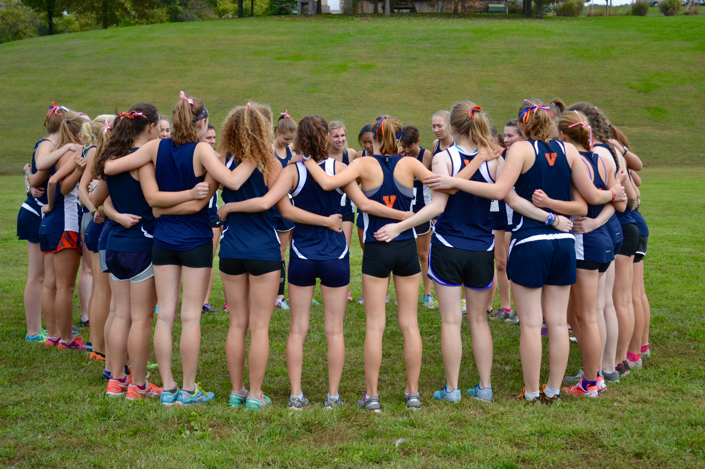

Women's Workouts
AKA "How we became back-to-back champs"
Welcome!
Our women’s club team is a home both to competitive and experienced runners who are regular participants in races as well as more casual members who run for fun or fitness. In races we are a competitive team placing 6th at NIRCA Cross Country National Championships in 2017 and 8th in 2018. We attend both club and DIII meets in the indoor and outdoor track season. All meets are based on voluntary sign ups, and we encourage all levels of runners to come out and join us at practice or in races!
Workouts
We meet as a team at the start of practice at Nameless Field. Our meeting time is Monday - Thursday at 5pm during daylight savings (March to November) and 4pm after daylight savings (November to March). We don’t have official practices on Fridays, although a number of our members will still show up to run together at the regular time. Saturday mornings are track workout days at 8:30 am, and Sunday mornings are long run days meeting at 9 am. Every Sunday night an email is sent out with the exact training plan for that week which includes two schedules, one for those who prefer higher mileage and one for those who train better with shorter mileage or are not looking to run competitively. While I ultimately design the workouts, I encourage feedback because my job is to make sure everyone personally gets the best training they can.
Sample Training Week
| Day | Longer Group | Shorter group |
|---|---|---|
| Monday | 5 miles easy | 4 miles easy |
| Tuesday | 4 miles easy Hip exercises and abs |
4 miles easy Hip exercises and abs |
| Wednesday |
800/1600 group: 8x1 minute hills at Belair 2x30 second hills 1600/5K group: 4x2 minute hills at Belair 2x30 second hills |
800/1600 group: 6x1 minute hills at Belair 2x30 second hills 1600/5K group: 4x1:30 minute hills at Belair 2x30 second hills |
| Thursday | 5 miles easy | 4 miles easy |
| Friday | OFF (or 4 miles for mileage) Hip exercises and abs |
OFF (or 4 miles for mileage) Hip exercises and abs |
| Saturday |
800/1600 group: Ladder 800-1200-1600-1200-800 2 x 200 or 4 x strides at end 1600/5K group: 5x1200 repeats 2 x 200 or 4 x strides at end |
800/1600 group: 400-800-1200-800-400 2 x 200 or 4 x strides at end 1600/5K group: 6x800 repeats 2 x 200 or 4 x strides at end |
| Sunday | 12 miles easy | 10 miles easy |

Abs
Tuesday the schedule says hip exercises and/or abs. I personally feel like a stronger runner when my core feels strong so I do a set of 10 x 1 minute ab exercises including regular crunches, planks, six inches, etc. I know people tend to have their own preferences with ab workouts, but feel free to contact me if you want my specific workout or guidance and I can give you some advice.
Hips
As for hip exercises, these are really important for injury prevention early on, you’ll thank yourself later for doing them. For ideas for specific exercises I usually do 15 of each exercise on each side with leg circles, leg lifts, clamshells, fire hydrants, and donkey kicks. For more ideas of what these are and what other exercises to do, here is a link to a great video Rachel made last year. I’ll also be available at practice for any questions or tips.
May Robison
Women's Workout Coordinator.
I am a second year student at UVA from Washington, DC and am double majoring in Global Sustainability and Economics with a minor in French. I have been running ever since middle school where I was one of two girls on my cross country team and have been enjoying the sport ever since. Joining the Running Club my first year was one of the best decisions I made both because of the high level of training I have been able to maintain as well as the many close friendships I have formed with my teammates. I love to see new faces at practice and hope anyone interested will come out and join us!